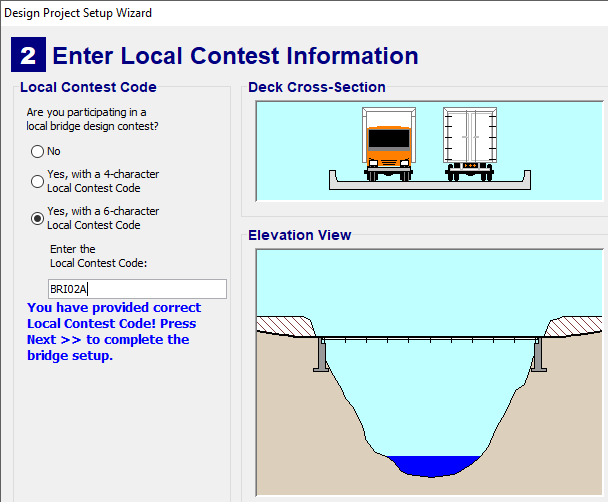
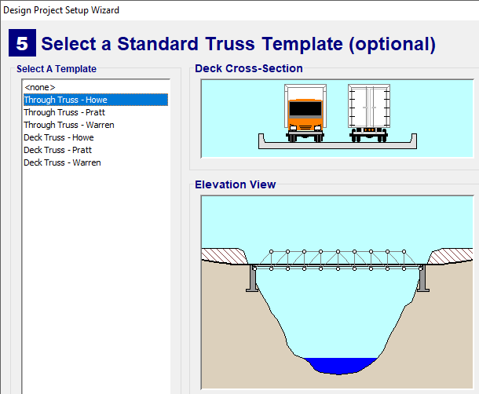
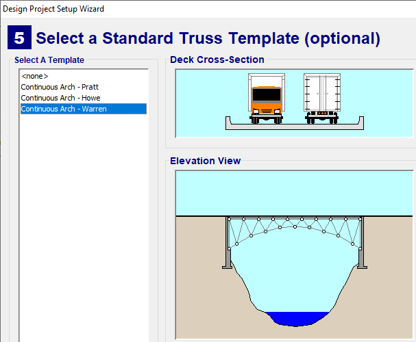
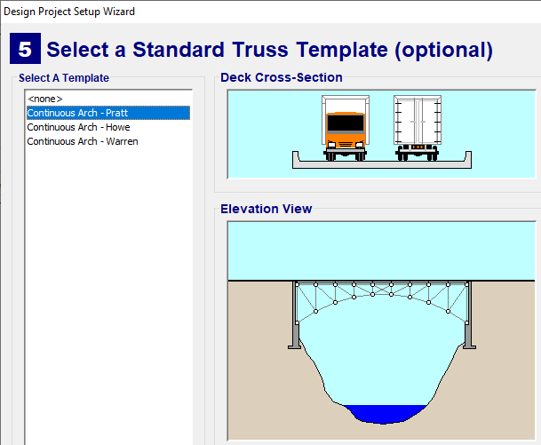
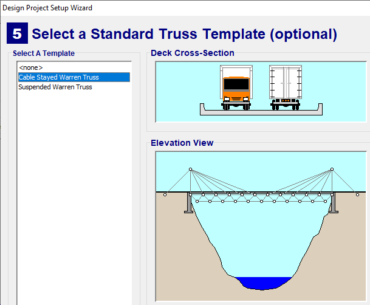
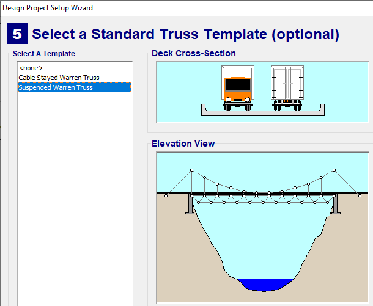
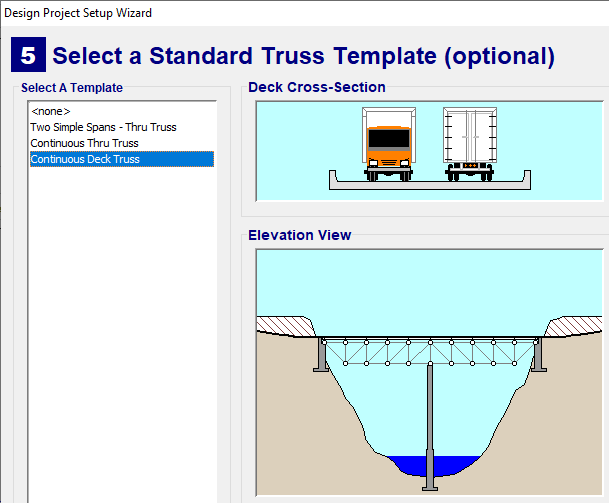
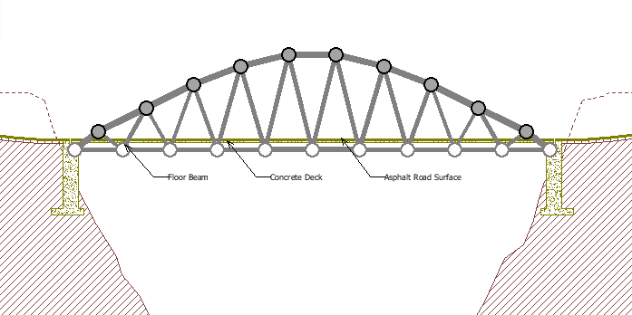
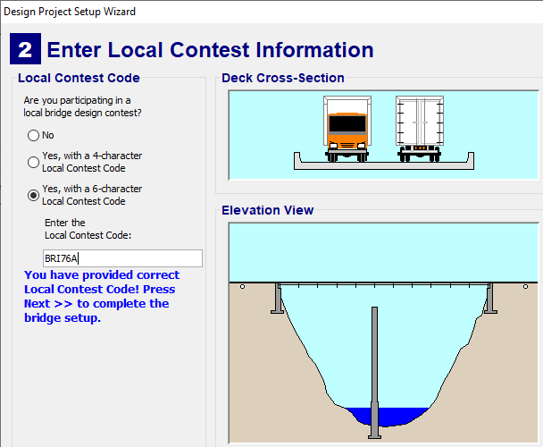

Bridge design¶

Bridge Designer software provides a hands-on introduction to engineering through an authentic and realistic design experience.
This software provides the tools to design, test, and optimize a steel highway bridge, based on realistic specifications, constraints, and performance criteria.
One of the objectives of the program is to minimize the amount of material used in the construction, as befits an ecological criterion.
The Bridge Designer is free and public domain software for Windows and Mac OS X. It is provided and intended for educational use only.
Links¶
Exercises¶
Design a bridge with the code BRI02A and template Through Truss - Warren so that it has the lowest possible cost.

Design a bridge with the code BRI02A and template Through Truss - Howe so that it has the lowest possible cost.
Design a bridge with the code BRI23A and template Continuous Arch - Warren so that it has the lowest possible cost.
Design a bridge with the code BRI23A and template Continuous Arch - Pratt so that it has the lowest possible cost.
Design a bridge with the code BRI12C and template Cable Stayed Warren Truss to have the lowest possible cost.

Design a bridge with the code BRI15A and template Cable Stayed Warren Truss to have the lowest possible cost.
Design a bridge with the code BRI15A and template Suspended Warren Truss so that it has the lowest possible cost.
Design a bridge with the code BRI54A and template Continuous Deck Truss so that it has the lowest possible cost.
Design a bridge with the code BRI02A and no template (choose template <none>). Next, the bridge will be designed with the shape of the following image.
The bridge must have the lowest possible cost.
Design a bridge with the code BRI76A and free form. Suspension cables and central support can be used.
The bridge must have the lowest possible cost.